使用小程序
大家可能对电子原件还不是很了解，今天小编给大家介绍一些电子原件。
一、电阻
电阻在电路中用“R”加数字表示，如：R13表示编号为13的电阻。电阻在电路中的主要作用为分流、限流、分压、偏置、滤波（与电容器组合使用）和阻抗匹配等。
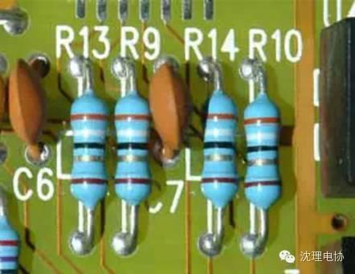
电阻器的符号
参数识别：电阻的单位为欧姆（Ω），倍率单位有：千欧（KΩ），兆欧（MΩ）等。换算方法是：1兆欧=1000千欧=1000000欧电阻的参数标注方法有3种，即直标法、色标法和数标法。
1MΩ=1000KΩ=1000000Ω
数标法主要用于贴片等小体积的电路，如：103表示10000Ω（10后面加3个0）也就是10K
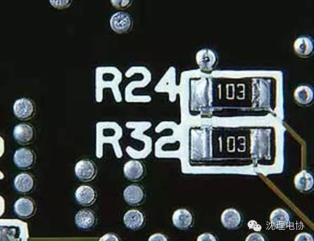
贴片电阻识别
色环标注法使用最多，现举例如下：
碳质电阻和一些1/8瓦碳膜电阻的阻值和误差用色环表示。在电阻上有三道或者四道色环。靠近电阻端的是第一道色环，其余顺次是二、三、四道色环，如图1所示。第一道色环表示阻值的最大一位数字，第二道色环表示第二位数字，第三道色环表示阻值未应该有几个零。第四道色环表示阻值的误差。色环颜色所代表的数字或者意义见表1。
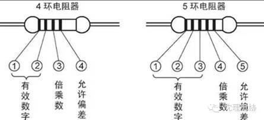
色环电阻器的表示方法
表1色环颜色所代表的数字或意义
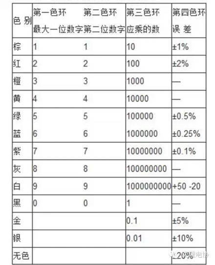
比如有一个碳质电阻，它有四道色环，顺序是红、黑、红、金。这个电阻的阻值就是2000欧，误差是±5%。如下图。
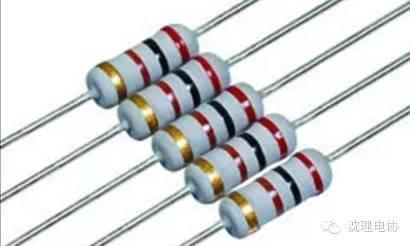
红、黑、红、金。阻值是2000欧=2k
双比如有一个碳质电阻，它有棕、绿、黑三道色环，它的阻值就是15欧，误差是±20%。
色环电阻是应用于各种电子设备的最多的电阻类型，无论怎样安装，维修者都能方便的读出其阻值，便于检测和更换。但在实践中发现，有些色环电阻的排列顺序不甚分明，往往容易读错，在识别时，可运用如下技巧加以判断：
技巧1：先找标志误差的色环，从而排定色环顺序。最常用的表示电阻误差的颜色是：金、银、棕，尤其是金环和银环，一般绝少用做电阻色环的第一环，所以在电阻上只要有金环和银环，就可以基本认定这是色环电阻的最末一环。
技巧2：棕色环是否是误差标志的判别。棕色环既常用做误差环，又常作为有效数字环，且常常在第一环和最末一环中同时出现，使人很难识别谁是第一环。在实践中，可以按照色环之间的间隔加以判别：比如对于一个五道色环的电阻而言，第五环和第四环之间的间隔比第一环和第二环之间的间隔要宽一些，据此可判定色环的排列顺序。
技巧3：在仅靠色环间距还无法判定色环顺序的情况下，还可以利用电阻的生产序列值来加以判别。比如有一个电阻的色环读序是：棕、黑、黑、黄、棕，其值为：100×10000=1MΩ误差为1%，属于正常的电阻系列值，若是反顺序读：棕、黄、黑、黑、棕，其值为140×1Ω=140Ω，误差为1%。显然按照后一种排序所读出的电阻值，在电阻的生产系列中是没有的，故后一种色环顺序是不对的。
二、电容
1、电容在电路中一般用“C”加数字表示（如C223表示编号为223的电容）。电容是由两片金属膜紧靠，中间用绝缘材料隔开而组成的元件。电容的特性主要是隔直流通交流。
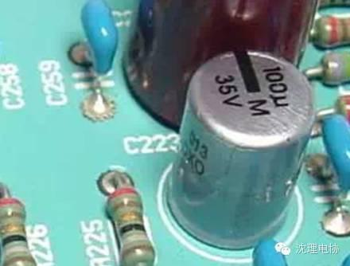
电路板上的电容器
电容容量的大小就是表示能贮存电能的大小，电容对交流信号的阻碍作用称为容抗，它与交流信号的频率和电容量有关。
容抗XC=1/2πfc(f表示交流信号的频率，C表示电容容量)
电话机中常用电容的种类有电解电容、瓷片电容、贴片电容、独石电容、钽电容和涤纶电容等。
2、识别方法：电容的识别方法与电阻的识别方法基本相同，分直标法、色标法和数标法3种。电容的基本单位用法拉（F）表示，其它单位还有：毫法（mF）、微法（uF）、纳法（nF）、皮法（pF）。
其中：1法拉=103毫法=106微法=109纳法=1012皮法容量大的电容其容量值在电容上直接标明，如10uF/16V容量小的电容其容量值在电容上用字母表示或数字表示。
字母表示法：1m=1000uF1P2=1.2PF1n=1000PF
数字表示法：一般用三位数字表示容量大小，前两位表示有效数字，第三位数字是倍率。
如：102表示10×102PF=1000PF224表示22×104PF=0.22uF
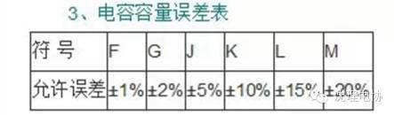
如：一瓷片电容为104J表示容量为0.1uF、误差为±5%。
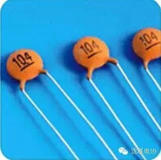
104瓷片电容器
4、故障特点
在实际维修中，电容器的故障主要表现为：
（1）引脚腐蚀致断的开路故障。
（2）脱焊和虚焊的开路故障。
（3）漏液后造成容量小或开路故障。
（4）漏电、严重漏电和击穿故障。
三、晶体二极管
晶体二极管在电路中常用“D”加数字表示，如：D７表示编号为７的二极管。
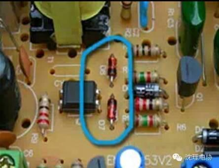
二极管在电路中的表示方法
1、作用：二极管的主要特性是单向导电性，也就是在正向电压的作用下，导通电阻很小；而在反向电压作用下导通电阻极大或无穷大。正因为二极管具有上述特性，无绳电话机中常把它用在整流、隔离、稳压、极性保护、编码控制、调频调制和静噪等电路中。
晶体二极管按作用可分为：整流二极管（如1N4004）、隔离二极管（如1N4148）、肖特基二极管（如BAT85）、发光二极管、稳压二极管等。
2、识别方法：二极管的识别很简单，小功率二极管的N极（负极），在二极管外表大多采用一种色圈标出来，有些二极管也用二极管专用符号来表示P极（正极）或N极（负极），也有采用符号标志为“P”、“N”来确定二极管极性的。发光二极管的正负极可从引脚长短来识别，长脚为正，短脚为负。
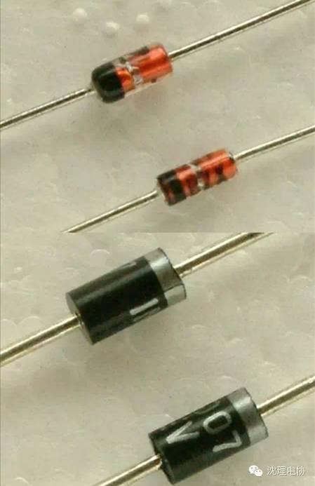
二极管的识别
3、测试注意事项：用数字式万用表去测二极管时，红表笔接二极管的正极，黑表笔接二极管的负极，此时测得的阻值才是二极管的正向导通阻值，这与指针式万用表的表笔接法刚好相反。
几乎在所有的电子电路中，都要用到半导体二极管，它在许多的电路中起着重要的作用，它是诞生最早的半导体器件之一，其应用也非常广泛。
二极管的工作原理
晶体二极管为一个由p型半导体和n型半导体形成的p-n结，在其界面处两侧形成空间电荷层，并建有自建电场。当不存在外加电压时，由于p-n结两边载流子浓度差引起的扩散电流和自建电场引起的漂移电流相等而处于电平衡状态。
当外界有正向电压偏置时，外界电场和自建电场的互相抑消作用使载流子的扩散电流增加引起了正向电流。
当外界有反向电压偏置时，外界电场和自建电场进一步加强，形成在一定反向电压范围内与反向偏置电压值无关的反向饱和电流I0。
当外加的反向电压高到一定程度时，p-n结空间电荷层中的电场强度达到临界值产生载流子的倍增过程，产生大量电子空穴对，产生了数值很大的反向击穿电流，称为二极管的击穿现象。
二极管的类型
二极管种类有很多，按照所用的半导体材料，可分为锗二极管（Ge管）和硅二极管（Si管）。根据其不同用途，可分为检波二极管、整流二极管、稳压二极管、开关二极管等。按照管芯结构，又可分为点接触型二极管、面接触型二极管及平面型二极管。
点接触型二极管是用一根很细的金属丝压在光洁的半导体晶片表面，通以脉冲电流，使触丝一端与晶片牢固地烧结在一起，形成一个“PN结”。由于是点接触，只允许通过较小的电流（不超过几十毫安），适用于高频小电流电路，如收音机的检波等。
面接触型二极管的“PN结”面积较大，允许通过较大的电流（几安到几十安），主要用于把交流电变换成直流电的“整流”电路中。
平面型二极管是一种特制的硅二极管，它不仅能通过较大的电流，而且性能稳定可靠，多用于开关、脉冲及高频电路中。
二极管的导电特性
二极管最重要的特性就是单方向导电性。在电路中，电流只能从二极管的正极流入，负极流出。下面通过简单的实验说明二极管的正向特性和反向特性。
正向特性
在电子电路中，将二极管的正极接在高电位端，负极接在低电位端，二极管就会导通，这种连接方式，称为正向偏置。必须说明，当加在二极管两端的正向电压很小时，二极管仍然不能导通，流过二极管的正向电流十分微弱。只有当正向电压达到某一数值（这一数值称为“门槛电压”，锗管约为0.2V，硅管约为0.6V）以后，二极管才能直正导通。导通后二极管两端的电压基本上保持不变（锗管约为0.3V，硅管约为0.7V），称为二极管的“正向压降”。
反向特性
在电子电路中，二极管的正极接在低电位端，负极接在高电位端，此时二极管中几乎没有电流流过，此时二极管处于截止状态，这种连接方式，称为反向偏置。二极管处于反向偏置时，仍然会有微弱的反向电流流过二极管，称为漏电流。当二极管两端的反向电压增大到某一数值，反向电流会急剧增大，二极管将失去单方向导电特性，这种状态称为二极管的击穿。
二极管的主要参数
用来表示二极管的性能好坏和适用范围的技术指标，称为二极管的参数。不同类型的二极管有不同的特性参数。对初学者而言，必须了解以下几个主要参数：
1、额定正向工作电流
是指二极管长期连续工作时允许通过的最大正向电流值。因为电流通过管子时会使管芯发热，温度上升，温度超过容许限度（硅管为140左右，锗管为90左右）时，就会使管芯过热而损坏。所以，二极管使用中不要超过二极管额定正向工作电流值。例如，常用的IN4001－4007型锗二极管的额定正向工作电流为1A。
2、最高反向工作电压
加在二极管两端的反向电压高到一定值时，会将管子击穿，失去单向导电能力。为了保证使用安全，规定了最高反向工作电压值。例如，IN4001二极管反向耐压为50V，IN4007反向耐压为1000V。
3、反向电流
反向电流是指二极管在规定的温度和最高反向电压作用下，流过二极管的反向电流。反向电流越小，管子的单方向导电性能越好。值得注意的是反向电流与温度有着密切的关系，大约温度每升高10，反向电流增大一倍。例如2AP1型锗二极管，在25时反向电流若为250uA，温度升高到35，反向电流将上升到500uA，依此类推，在75时，它的反向电流已达8mA，不仅失去了单方向导电特性，还会使管子过热而损坏。又如，2CP10型硅二极管，25时反向电流仅为5uA，温度升高到75时，反向电流也不过160uA。故硅二极管比锗二极管在高温下具有较好的稳定性。
测试二极管的好坏
初学者在业余条件下可以使用万用表测试二极管性能的好坏。测试前先把万用表的转换开关拨到欧姆档的RX1K档位（注意不要使用RX1档，以免电流过大烧坏二极管），再将红、黑两根表笔短路，进行欧姆调零。
1、正向特性测试
把万用表的黑表笔（表内正极）搭触二极管的正极，，红表笔（表内负极）搭触二极管的负极。若表针不摆到0值而是停在标度盘的中间，这时的阻值就是二极管的正向电阻，一般正向电阻越小越好。若正向电阻为0值，说明管芯短路损坏，若正向电阻接近无穷大值，说明管芯断路。短路和断路的管子都不能使用。
2、反向特性测试
把万且表的红表笔搭触二极管的正极，黑表笔搭触二极管的负极，若表针指在无穷大值或接近无穷大值，管子就是合格的。
二极管的应用
1、整流二极管
利用二极管单向导电性，可以把方向交替变化的交流电变换成单一方向的脉动直流电。
2、开关元件
二极管在正向电压作用下电阻很小，处于导通状态，相当于一只接通的开关；在反向电压作用下，电阻很大，处于截止状态，如同一只断开的开关。利用二极管的开关特性，可以组成各种逻辑电路。
3、限幅元件
二极管正向导通后，它的正向压降基本保持不变（硅管为0.7V，锗管为0.3V）。利用这一特性，在电路中作为限幅元件，可以把信号幅度限制在一定范围内。
4、继流二极管
在开关电源的电感中和继电器等感性负载中起继流作用。
5、检波二极管
在收音机中起检波作用。
6、变容二极管
使用于电视机的高频头中。
四、电感
电感在电路中常用“L”加数字表示，如：L3表示编号为3的电感。
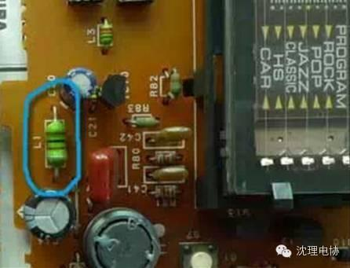
电路板上的电感器
电感线圈是将绝缘的导线在绝缘的骨架上绕一定的圈数制成。
直流可通过线圈，直流电阻就是导线本身的电阻，压降很小；当交流信号通过线圈时，线圈两端将会产生自感电动势，自感电动势的方向与外加电压的方向相反，阻碍交流的通过，所以电感的特性是通直流阻交流，频率越高，线圈阻抗越大。电感在电路中可与电容组成振荡电路。
电感一般有直标法和色标法，色标法与电阻类似。如：棕、黑、金、金表示1uH（误差5%）的电感。
电感的基本单位为：亨（H）换算单位有：1H=103mH=106uH。
五、晶体三极管
晶体三极管在电路中常用“Q”加数字表示，如：Q1表示编号为1的三极管。
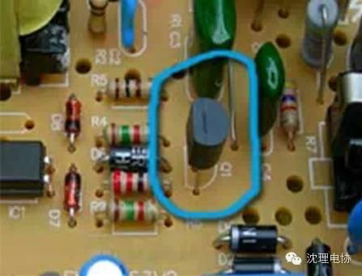
电路板上的三极管
1、特点：晶体三极管（简称三极管）是内部含有2个PN结，并且具有放大能力的特殊器件。它分NPN型和PNP型两种类型，这两种类型的三极管从工作特性上可互相弥补，所谓OTL电路中的对管就是由PNP型和NPN型配对使用。
常用的PNP型三极管有：9012、9015等型号；NPN型三极管有：9011、9012、9013、9014、9018、等型号。
2、晶体三极管主要用于放大电路中起放大作用，
应用多级放大器中间级，低频放大输入级、输出级或作阻抗匹配用高频或宽频带电路及恒流源电路
3、晶体三极管的识别
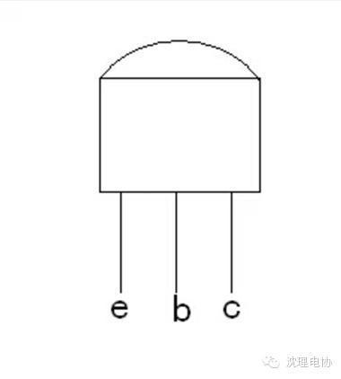
图1-2
常用晶体三极管的封装形式有金属封装和塑料封装两大类，引脚的排列方式具有一定的规律。对于小功率金属封装三极管，按底视图位置放置，使其三个引脚构成等腰三角形的顶点向上，从左向右依次为e、b、c；对于中、小功率塑料封装三极管，按图示1-2位置使其平面朝向自己，三个引脚朝下放置，则从左向右依次为e、b、c。
关注沈理电协（微信：sylgdzxh）
每一次转发和分享都是对我们的肯定。